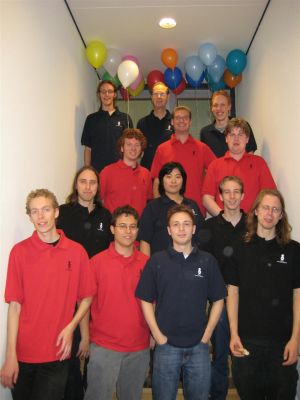
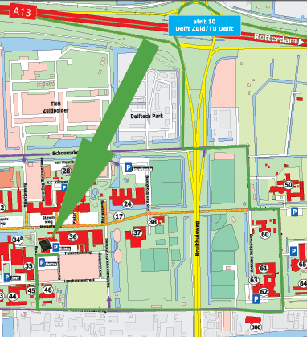
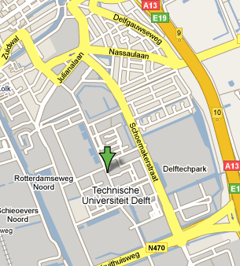

Welcome to the site of the Benelux Algorithm Programming Contest (BAPC) 2008.
This year's BAPC will be held Saturday the 25th of October. Any university or college from the Netherlands, Belgium and Luxembourg can enter the contest with one or more teams. The contest will be held in Delft and will take all day, including drinks and the dinner at the end.
- NEW (26-10) The final results are in!
Winner: Prime Suspects, Universiteit Leiden
2nd place: .uit, Rijksuniversiteit Groningen
3rd place: assert(rank == 1), Universiteit Utrecht
Best business team: 22-23 Nov: NWERC in Utrecht, Universiteit Utrecht
- (20-10)Registration for BAPC 2008 is now closed!
- (14-10) To assure a spot at the BAPC, please sign up before Friday 17th. Registration after this date is possible, but won't guarantee you a spot.
If you have any problems signing up, please contact us.
- (14-10) Unfortunately, we have reached our limit of business teams for this year.
Time Program
09:30 Team registration with coffee
10:30 Welcome and day instruction
11:00 Start test session
11:45 End test session; Lunch available
12:30 Last minute remarks
13:00 Start contest
18:00 End contest, start drinks
18:30 Award ceremony
20:00 Dinner (at own costs)
Soft drinks are available all day at a 'Chipknip'-only operated vending machine located in the building, orange juice and milk will be served at lunch.
The CHipCie (Christiaan Huygens Important Programming Committee) is the committee of Study Association 'Christiaan Huygens' responsible for organizing all programming contests at the faculty for Electrical Engineering, Mathematics and Computer Science of the Delft University of Technology.

- Chairman: Thomas Verwoerd
- Secretary: Boaz Pat-El
- Treasurer: Robin van den Berg
- Public Relations: Raul Kooter
- Food and Drinks: Martin van Buuren
- Head of judges: Thomas Schaap
- Judges: Arnout Boks, Cynthia Liem, Boaz Pat-El, Peter Kluit, Eljakim Schrijvers (ext), Boris de Wilde (ext), David Koh (ext)
- System: Jeroen Dekkers, Wouter van Heyst, Martijn van Oosterhout, Mark Janssen
Registering for the BAPC directly is not possible, please refer
to your local study association or contact person.
If no contact person is known, please contact us.
For contact persons
Registration takes place using the ICPC registration system. This can be found at
http://icpc.baylor.edu. After creating an account a team can be created by clicking
'create team' on the homepage. You can reserve a team for the BAPC by browsing through
Europe, North-Western Europe, Benelux Algorithm Programming Contest and selecting
Delft University of Technology. The details don't have to be filled in yet.
Please register your institution's teams before 17th of October.
Faculteit EWI/Faculty EEMCS
Cornelis Drebbelweg 5
2628 CM Delft
By public transport
By train, travel to Delft Centraal Station. From there take bus 129 to Rotterdam. Leave at Drebbelweg.
9292ov.nl
By car
Faculty EEMCS is most easily accessible by car from highway A13. From both directions
take exit 10 Delft Zuid/TU Delft. Because of the reconstruction of the Mekelpark you would probably have to
take a detour, follow the yellow sign to Elektotechniek.

Please note when programming your navigation computer or Google Maps that the Mekelweg is closed down,
so please check this when planning you route.

Sleeping accomodations
Unfortunately, we can't support sleeping accomodations for people who have to come from far this year.
Please visit
this website
for a list of possible hotels.